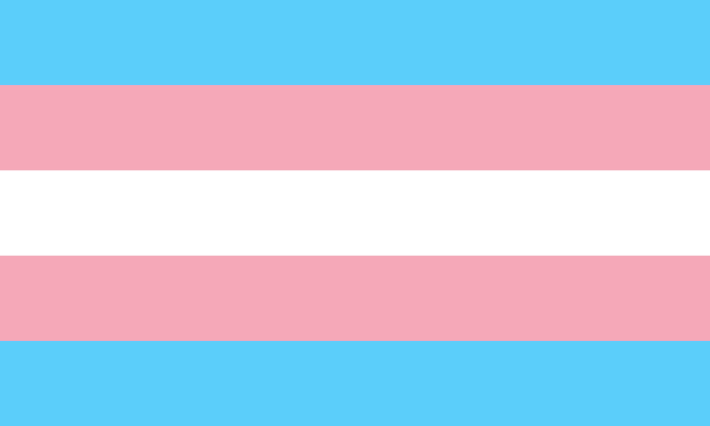

LQBTQIA+
What is LGBTQIA+?
Abbreviation for Lesbian, Gay, Bisexual, Transgender, Queer, Intersex, and Asexual. The additional “+” stands for all of the other identities not encompassed in the short acronym. An umbrella term that is often used to refer to the community as a whole. Our center uses LGBTQIA to intentionally include and raise awareness of Queer, Intersex and Asexual communities as well as myriad other communities under our umbrella.
Lesbian
 Usually, someone who identifies as a woman, whose primary sexual and affectional orientation is toward people of the same gender. However, some nonbinary people also identify as lesbians, often because they have some connection to womanhood and are primarily attracted to women.
Dark orange signifies gender non-conformity, orange signifies independence, light orange signifies community, white signifies unique relationships to womanhood, pink signifies serenity and peace, dusty pink signifies love and sex, and dark rose signifies femininity.
Usually, someone who identifies as a woman, whose primary sexual and affectional orientation is toward people of the same gender. However, some nonbinary people also identify as lesbians, often because they have some connection to womanhood and are primarily attracted to women.
Dark orange signifies gender non-conformity, orange signifies independence, light orange signifies community, white signifies unique relationships to womanhood, pink signifies serenity and peace, dusty pink signifies love and sex, and dark rose signifies femininity.
Gay
 A sexual and affectional orientation toward people of the same gender. See Homosexual/Homosexuality. The image to the right shows the gay men flag.
A sexual and affectional orientation toward people of the same gender. See Homosexual/Homosexuality. The image to the right shows the gay men flag.
Bisexual
 A person whose primary sexual and affectional orientation is toward people of the same and other genders, or towards people regardless of their gender. Some people may use bisexual and pansexual interchangeably.
A person whose primary sexual and affectional orientation is toward people of the same and other genders, or towards people regardless of their gender. Some people may use bisexual and pansexual interchangeably.
Transgender
 An adjective used most often as an umbrella term and frequently abbreviated to “trans.” Identifying as transgender, or trans, means that one’s internal knowledge of gender is different from conventional or cultural expectations based on the sex that person was assigned at birth. While transgender may refer to a woman who was assigned male at birth or a man who was assigned female at birth, transgender is an umbrella term that can also describe someone who identifies as a gender other than woman or man, such as non binary, genderqueer, genderfluid, no gender or multiple genders, or some other gender identity.
Queer
An umbrella term used to describe gender/sexual/romantic orientations or identities that fall outside of societal norms. Historically, queer has been used as an epithet/slur against the LGBTQ+ community. Some people have reclaimed the word queer and self identify in opposition to assimilation [adapted from “Queering the Field”]. For some, this reclamation is a celebration of not fitting into social norms. Not all people who identify as LGBTQIA use “queer” to describe themselves. For example, those of earlier generations are typically averse to self-identifying as queer. The term is often considered hateful when used by those who do not identify as LGBTQIA.